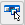

Customize the layout of the user interface
You can use the Layout tab in the Customize dialog box to create a new user interface theme or to make changes to the out-of-the-box theme delivered with Solid Edge.
-
On the Quick Access toolbar, click the Customize arrow
 , and then choose Customize
, and then choose Customize 
. -
In the Customize dialog box, click the Layout tab.
-
On the Layout tab (Customize dialog box), do one of the following:
Make changes to a Solid Edge theme
-
From the Theme list, select the theme that you want to modify.
-
Select or clear user interface layout options as needed.
-
Click Save.
Create a custom user interface theme
-
From the Theme list, select a theme to use as the basis for the new theme.
-
Select or clear user interface layout options as needed.
-
Click Save As.
-
In the Save Theme As dialog box, type a unique name for the new theme.
-
-
When you create a user-defined theme on the Layout tab, you also can apply changes to the theme using the Keyboard, QAT, Ribbon, and Radial tabs in the Customize dialog box.
-
When you modify a Solid Edge theme, only the options on the Layout tab can be changed. If you dislike the changes you made to a theme, you can select the Reset button to restore the user interface options on the Layout tab as follows:
-
For Solid Edge themes—The out-of-the-box configuration of the user interface for the selected theme is restored.
-
For user-defined themes—The settings on the Layout tab are restored to the defaults of the Solid Edge theme from which the user-defined theme is derived.
-